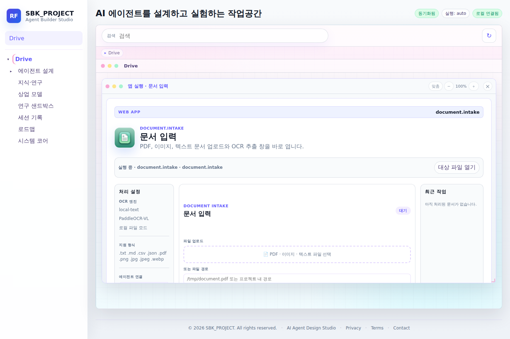

Agent behavior
Role profiles, safety config, model routing, and per-agent knowledge stay visible together.
Local-first AI agent harness
A portfolio-safe overview of the RoleForge control plane: agent registry, model policy, RAG knowledge, OCR intake, voice, image, 3D, and public release review.

RoleForge treats local AI work as an orchestration problem instead of a collection of disconnected model scripts.
Role profiles, safety config, model routing, and per-agent knowledge stay visible together.
OCR, voice, image, and 3D adapters are presented as controlled panels rather than hidden scripts.
Portfolio output keeps source code, generated artifacts, secrets, and local model weights out of public repos.
This tabbed tour is GitHub Pages ready. A GIF or MP4 demo can be added later without changing the README structure.

Role profiles, safety rules, model policy, and knowledge sources.

OCR and PDF extraction with RAG knowledge promotion.

PII, license, and publication checks before public release.